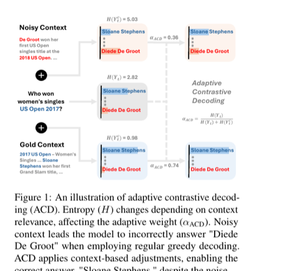

An entropy-based adaptive contrastive decoding method that dynamically adjusts how much an LLM relies on retrieved context during RAG, achieving robust open-domain QA performance even when retrieval returns noisy or irrelevant passages.

When using LLMs for knowledge-intensive tasks such as open-domain question answering, Retrieval-Augmented Generation (RAG) bridges the gap between external knowledge and the model's parametric knowledge by feeding retrieved documents as context. However, real-world retrieval is far from perfect -- passages are often noisy, irrelevant, or even contradictory to the correct answer. When a model blindly conditions on such low-quality contexts, generation quality degrades significantly.
Recent contrastive decoding approaches (e.g., Context-Aware Decoding, CAD) attempt to amplify contextual knowledge over parametric knowledge by contrasting output distributions with and without context. While effective when relevant context is provided, these methods use a fixed contrastive weight, making them vulnerable to noisy retrieval scenarios. Another line of work, Multi-Input Contrastive Decoding (MICD), introduces a dynamic weight based on maximum token probability, but its relevance estimation remains coarse-grained and unreliable.
Limitation of Fixed Contrastive Decoding: Methods like CAD apply a constant weight (α = 0.5) to suppress or amplify context influence. This is fundamentally suboptimal: a fixed weight over-corrects when the retrieved context is actually helpful (degrading performance on gold contexts -- e.g., CAD drops TriviaQA from 60.23 to 49.02 on Llama2-7B) and under-corrects when the context is noisy or misleading (failing to suppress harmful influence). Similarly, MICD-F uses a fixed α = 1.0, which aggressively amplifies context regardless of quality.
Key Insight: The optimal decoding strategy should adapt dynamically based on how much the retrieved context actually helps the model. By measuring the entropy change between context-free and context-augmented output distributions, the model itself can signal whether context is reducing uncertainty (helpful) or not (noisy) -- and the contrastive weight should respond accordingly. Unlike MICD-D's max-probability heuristic, entropy captures the full shape of the output distribution, providing a more principled and reliable relevance signal.
ACD extends standard contrastive decoding with an entropy-based adaptive weight mechanism. The core decoding formula is:
Decoding Formula: P(Y_t | x, y_<t) = softmax( z_t + αACD · (z_tc - z_t) )
where z_t are the logits without context, z_tc are the logits with context, and αACD is the adaptive weight.
Adaptive Weight: αACD = H(Y_t) / ( H(Y_t) + H(Y_tc) )
where H(Y_t) is the entropy of the context-free distribution and H(Y_tc) is the entropy of the context-augmented distribution.
The intuition is simple: when retrieved context reduces model uncertainty (H(Y_tc) < H(Y_t)), αACD approaches 1, amplifying context influence. When context adds confusion (H(Y_tc) > H(Y_t)), αACD decreases toward 0, suppressing context influence and relying more on parametric knowledge. When both entropies are equal, αACD = 0.5, providing a neutral balance.
ACD is evaluated on three open-domain QA benchmarks using Wikipedia (December 2018 dump) as the retrieval corpus:
Retrieval uses Contriever-msmarco with top-1 passage selection. Four LLMs are tested: Llama2-7B, Llama2-13B, Llama3-8B, and Mistral-7B. All experiments use 5-shot prompting and Exact Match (EM) as the evaluation metric. To systematically analyze robustness, each dataset is split into:
Baselines include: RegCls (closed-book, no context), RegOpn / Standard RAG (open-book, standard greedy decoding), CAD (fixed α=0.5), MICD-F (fixed α=1.0), and MICD-D (dynamic α based on max token probability).
| Method | TriviaQA | NQ | PopQA | ||||||
|---|---|---|---|---|---|---|---|---|---|
| All | Gold | Noisy | All | Gold | Noisy | All | Gold | Noisy | |
| Standard RAG | 60.23 | 87.40 | 33.50 | 31.39 | 61.31 | 12.40 | 38.49 | 81.21 | 7.77 |
| CAD (α=0.5) | 49.02 | 73.69 | 24.75 | 25.57 | 51.61 | 9.05 | 33.70 | 72.18 | 6.03 |
| MICD-F (α=1.0) | 60.36 | 85.72 | 35.39 | 29.45 | 56.10 | 12.54 | 35.73 | 74.25 | 8.03 |
| MICD-D | 63.23 | 86.03 | 40.79 | 30.36 | 52.18 | 16.52 | 39.01 | 77.39 | 11.42 |
| ACD (Ours) | 64.85 | 88.01 | 42.06 | 32.91 | 56.60 | 17.88 | 41.29 | 82.77 | 11.46 |
ACD achieves the best overall performance across all three datasets. Critically, it simultaneously excels on both SubsetGold (preserving retrieval benefits) and SubsetNoisy (suppressing noise). CAD, with its fixed weight, catastrophically degrades on both subsets -- dropping TriviaQA from 87.40 to 73.69 on gold contexts, showing that indiscriminate contrastive amplification actively hurts when contexts are helpful.
| Model | Method | TriviaQA | NQ | PopQA |
|---|---|---|---|---|
| Llama2-13B | MICD-D | 66.52 | 34.38 | 41.65 |
| ACD | 67.37 | 36.12 | 43.35 | |
| Llama3-8B | MICD-D | 64.01 | 30.72 | 41.35 |
| ACD | 66.32 | 35.48 | 43.25 | |
| Mistral-7B | MICD-D | 66.97 | 33.24 | 39.87 |
| ACD | 67.82 | 35.37 | 41.47 |
ACD consistently outperforms the strongest baseline (MICD-D) across all four model architectures, with particularly large gains on NQ (+4.76 on Llama3-8B) where retrieval noise is most prevalent.
To verify that the adaptive weight truly reflects context quality, the paper measures how well α values separate gold from noisy contexts using AUROC. Three aggregation strategies are compared: max, average, and first-token α.
| Aggregation | Method | NQ | TriviaQA | PopQA |
|---|---|---|---|---|
| Max | MICD-D | 51.53 | 59.76 | 65.49 |
| ACD | 65.78 | 73.37 | 74.84 | |
| Average | MICD-D | 54.18 | 63.78 | 72.64 |
| ACD | 68.80 | 72.32 | 78.90 | |
| First Token | MICD-D | 53.92 | 62.95 | 68.81 |
| ACD | 73.27 | 80.45 | 80.08 |
ACD's entropy-based α achieves 65-80% AUROC across all settings, far surpassing MICD-D's max-probability heuristic (51-73%). The first-token α is especially discriminative, suggesting that the model's initial reaction to context is already highly informative about passage quality.
The oracle sets α=1.0 for gold contexts and α=0.0 for noisy contexts -- a perfect relevance estimator using ground-truth labels:
| Dataset | ACD | Oracle | Gap |
|---|---|---|---|
| NQ | 32.91 | 35.35 | +2.44 |
| TriviaQA | 64.85 | 65.31 | +0.46 |
| PopQA | 41.29 | 44.10 | +2.81 |
ACD reaches 97-99% of oracle performance without any ground-truth labels, demonstrating that entropy is an excellent proxy for true context relevance.
The paper ablates performance across fixed α values from 0.0 to 1.0 to confirm that dynamic weighting is strictly superior. At α=0.0 (parametric only), overall EM is low. As α increases, gold-context performance initially improves but noisy-context performance worsens. No single fixed α can optimize both subsets simultaneously. ACD's adaptive α consistently outperforms every fixed α by 1-3 EM points overall, validating that per-token dynamic adjustment is essential.
A particularly revealing analysis uses the NQ-swap dataset (3,650 samples), where gold answer spans in retrieved passages are replaced with random entities of the same type. This creates a scenario where the context is structurally relevant but factually wrong -- directly conflicting with the model's parametric knowledge.
Key Finding: ACD achieves 60-75% EM on NQ-swap across models, substantially outperforming Standard RAG (41-50%) which blindly follows the manipulated context. Critically, ACD also outperforms MICD-D, which tends to over-reject contexts and fails to leverage the structural cues. ACD's entropy-based mechanism correctly identifies that the swapped context increases model uncertainty (since the injected entity conflicts with parametric knowledge), leading to lower α and appropriate reliance on internal knowledge.
Two illustrative examples demonstrate how ACD's entropy-based weight works in practice:
Known-Noisy Example: "Who does the voice of Nala in the Lion King?"
The model already knows the answer (Moira Kelly) with low entropy: H(Y_t) = 2.92. When given a noisy passage suggesting Whoopi Goldberg, context-augmented entropy spikes: H(Y_tc) = 5.46. The resulting αACD = 0.35 (low), correctly suppressing the misleading context. ACD answers "Moira Kelly" -- correct.
Unknown-Gold Example: "Who played Ben Stone on Law and Order?"
The model is uncertain (guesses Michael Tucker) with high entropy: H(Y_t) = 6.67. Given a gold passage mentioning Michael Moriarty, uncertainty drops sharply: H(Y_tc) = 1.56. The resulting αACD = 0.81 (high), correctly amplifying the helpful context. ACD answers "Michael Moriarty" -- correct.
These cases illustrate the core mechanism: αACD naturally tracks whether context resolves or creates uncertainty, without any explicit relevance classifier.
RAG systems are increasingly deployed in production, but retrieval quality is inherently unpredictable. A system that works well with perfect retrieval can fail catastrophically with noisy results. ACD addresses this fundamental brittleness through three key contributions: